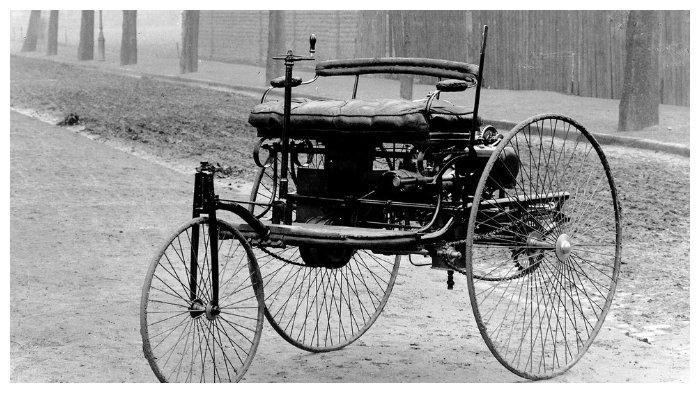
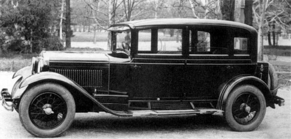
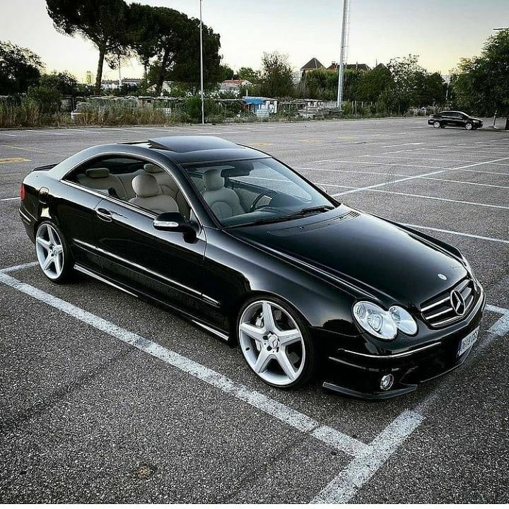
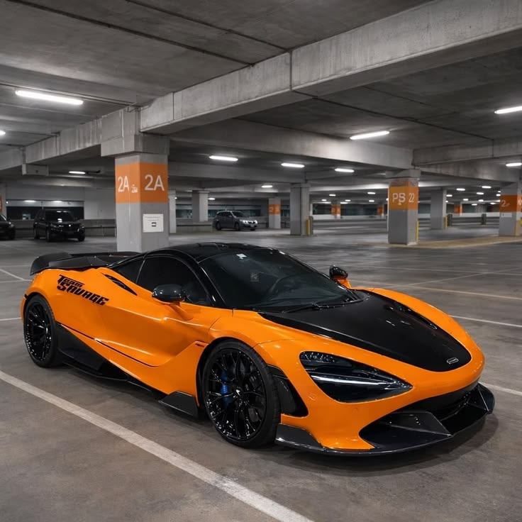

Selamat datang di Garasi Legenda. Pilih jalur penelusuran Anda untuk menyingkap spesifikasi mobil sport atau evolusi seni aerodinamika sasis.
Jelajahi sejarah mendalam, blueprint mesin ikonik (RB26, 2JZ), dan performa puluhan mobil sport.
Mengenal mahakarya wide-body riveted, filosofi aerodinamika RWB, LBWK, hingga Top Secret.
Menelusuri jejak peradaban mesin pembakaran internal, transformasi kultural, dan metamorfosis industri mobil sport dunia dalam lembaran narasi sejarah yang mendalam.

Peradaban otomotif modern tidak tercipta dalam sekejap mata. Semuanya bermula dari percikan inovasi para visioner awal yang mencoba memanfaatkan tenaga uap untuk menggerakkan kendaraan berat. Kendaraan bermesin uap pertama di dunia diciptakan sebagai cikal bakal alat transportasi darat mandiri tanpa kuda.
Namun, tonggak sejarah sesungguhnya yang mengubah arah peradaban terjadi ketika Karl Benz berhasil mematenkan mobil berbahan bakar bensin beroda tiga di akhir abad ke-19. Penemuan mesin pembakaran internal ini memicu revolusi besar-besaran bagi industri otomotif global.
Memasuki abad ke-20, mobil bukan lagi sekadar mainan mahal para bangsawan. Sistem perakitan jalur massal yang dipelopori oleh Henry Ford lewat Model T berhasil memangkas biaya produksi secara drastis, menjadikan mobil sebagai kebutuhan nyata bagi masyarakat luas.
Di belahan timur, khususnya Jepang, industri otomotif merangkak bangkit dari puing-puing kehancuran Perang Dunia II. Para insinyur Jepang memfokuskan diri merancang mobil-mobil efisien sebelum akhirnya merambah kancah global.


Inilah era paling legendaris yang memicu gelombang antusiasme global hingga hari ini. Pabrikan asal Jepang mendefinisikan ulang standar performa tinggi melalui mahakarya mesin legendaris seperti Nissan RB26DETT, Toyota 2JZ-GTE, hingga mesin rotary Mazda 13B-REW.
Hal tersebut melahirkan sub-kultur balap malam hari yang ikonik, mempertaruhkan nyali di kelokan tajam pegunungan dan kecepatan puncak di jalan tol Tokyo.
Di era kontemporer ini, teknologi sasis cerdas dan aerodinamika digital berpadu secara harmonis dengan warisan mekanikal analog masa lalu, menyongsong era performa tinggi yang lebih ramah lingkungan namun tetap bertenaga buas.
Bersamaan dengan itu, dunia modifikasi independen seperti aliran wide-body dari Liberty Walk (LBWK) dan RWB mengangkat mobil sport klasik menjadi karya seni bernilai tinggi di seluruh penjuru dunia.

Data live dari Supabase Database
Filosofi dan mahakarya master modifikasi dunia dengan narasi lengkap.